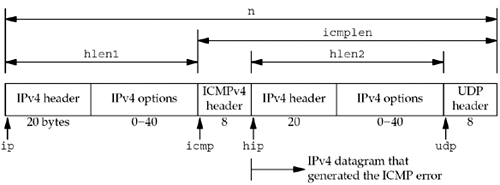
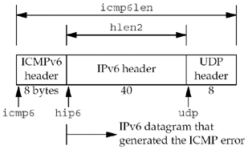

| [ Team LiB ] |
|
28.6 traceroute ProgramIn this section, we will develop our own version of the traceroute program. Like the ping program we developed in the previous section, we will develop and present our own version, instead of presenting the publicly available version. We do this because we need a version that supports both IPv4 and IPv6, and we do not want to be distracted with lots of options that are not germane to our discussion of network programming. traceroute lets us determine the path that IP datagrams follow from our host to some other destination. Its operation is simple and Chapter 8 of TCPv1 covers it in detail with numerous examples of its usage. traceroute uses the IPv4 TTL field or the IPv6 hop limit field and two ICMP messages. It starts by sending a UDP datagram to the destination with a TTL (or hop limit) of 1. This datagram causes the first-hop router to return an ICMP "time exceeded in transit" error. The TTL is then increased by one and another UDP datagram is sent, which locates the next router in the path. When the UDP datagram reaches the final destination, the goal is to have that host return an ICMP "port unreachable" error. This is done by sending the UDP datagram to a random port that is (hopefully) not in use on that host. Early versions of traceroute were able to set the TTL field in the IPv4 header only by setting the IP_HDRINCL socket option and then building their own IPv4 header. Current systems, however, provide an IP_TTL socket option that lets us specify the TTL to use for outgoing datagrams. (This socket option was introduced with the 4.3BSD Reno release.) It is easier to set this socket option than to build a complete IPv4 header (although we will show how to build IPv4 and UDP headers in Section 29.7). The IPv6 IPV6_UNICAST_HOPS socket option lets us control the hop limit field for IPv6 datagrams. Figure 28.17 shows our trace.h header, which all our program files include. 1–11 We include the standard IPv4 headers that define the IPv4, ICMPv4, and UDP structures and constants. The rec structure defines the data portion of the UDP datagram that we send, but we will see that we never need to examine this data. It is sent mainly for debugging purposes. Define proto structure32–43 As with our ping program in the previous section, we handle the protocol differences between IPv4 and IPv6 by defining a proto structure that contains function pointers, pointers to socket address structures, and other constants that differ between the two IP versions. The global pr will be set to point to one of these structures that is initialized for either IPv4 or IPv6, after the destination address is processed by the main function (since the destination address is what specifies whether we use IPv4 or IPv6). Include IPv6 headers44–47 We include the headers that define the IPv6 and ICMPv6 structures and constants. Figure 28.17 trace.h header.traceroute/trace.h
1 #include "unp.h"
2 #include <netinet/in_systm.h>
3 #include <netinet/ip.h>
4 #include <netinet/ip_icmp.h>
5 #include <netinet/udp.h>
6 #define BUFSIZE 1500
7 struct rec { /* of outgoing UDP data */
8 u_short rec_seq; /* sequence number */
9 u_short rec_ttl; /* TTL packet left with */
10 struct timeval rec_tv; /* time packet left */
11 };
12 /* globals */
13 char recvbuf [BUFSIZE];
14 char sendbuf [BUFSIZE];
15 int datalen; /* # bytes of data following ICMP header */
16 char *host;
17 u_short sport, dport;
18 int nsent; /* add 1 for each sendto () */
19 pid_t pid; /* our PID */
20 int probe, nprobes;
21 int sendfd, recvfd; /* send on UDP sock, read on raw ICMP sock */
22 int ttl, max_ttl;
23 int verbose;
24 /* function prototypes */
25 const char *icmpcode_v4 (int);
26 const char *icmpcode_v6 (int);
27 int recv_v4 (int, struct timeval *);
28 int recv_v6 (int, struct timeval *);
29 void sig_alrm (int);
30 void traceloop (void);
31 void tv_sub (struct timeval *, struct timeval *);
32 struct proto {
33 const char *(*icmpcode) (int);
34 int (*recv) (int, struct timeval *);
35 struct sockaddr *sasend; /* sockaddr{} for send, from getaddrinfo */
36 struct sockaddr *sarecv; /* sockaddr{} for receiving */
37 struct sockaddr *salast; /* last sockaddr{} for receiving */
38 struct sockaddr *sabind; /* sockaddr{} for binding source port */
39 socklen_t salen; /* length of sockaddr{}s */
40 int icmpproto; /* IPPROTO_xxx value for ICMP */
41 int ttllevel; /* setsockopt () level to set TTL */
42 int ttloptname; /* setsockopt () name to set TTL */
43 } *pr;
44 #ifdef IPV6
45 #include <netinet/ip6.h>
46 #include <netinet/icmp6.h>
47 #endif
The main function is shown in Figure 28.18 (p. 759). It processes the command-line arguments, initializes the pr pointer for either IPv4 or IPv6, and calls our traceloop function. Define proto structures2–9 We define the two proto structures, one for IPv4 and one for IPv6, although the pointers to the socket address structures are not allocated until the end of this function. Set defaults10–13 The maximum TTL or hop limit that the program uses defaults to 30, although we provide the -m command-line option to let the user change this. For each TTL, we send three probe packets, but this could be changed with another command-line option. The initial destination port is 32768+666, which will be incremented by one each time we send a UDP datagram. We hope that these ports are not in use on the destination host when the datagrams finally reach the destination, but there is no guarantee. Process command-line arguments19–37 The -v command-line option causes most received ICMP messages to be printed. Process hostname or IP address argument and finish initialization38–58 The destination hostname or IP address is processed by our host_serv function, returning a pointer to an addrinfo structure. Depending on the type of returned address, IPv4 or IPv6, we finish initializing the proto structure, store the pointer in the pr global, and allocate additional socket address structures of the correct size. 59 The function traceloop, shown in Figure 28.19, sends the datagrams and reads the returned ICMP messages. This is the main loop of the program. Figure 28.18 main function for traceroute program.traceroute/main.c
1 #include "trace.h"
2 struct proto proto_v4 = { icmpcode_v4, recv_v4, NULL, NULL, NULL, NULL, 0,
3 IPPROTO_ICMP, IPPROTO_IP, IP_TTL
4 };
5 #ifdef IPV6
6 struct proto proto_v6 = { icmpcode_v6, recv_v6, NULL, NULL, NULL, NULL, 0,
7 IPPROTO_ICMPV6, IPPROTO_IPV6, IPV6_UNICAST_HOPS
8 };
9 #endif
10 int datalen = sizeof (struct rec); /* defaults */
11 int max_ttl = 30;
12 int nprobes = 3;
13 u_short dport = 32768 + 666;
14 int
15 main(int argc, char **argv)
16 {
17 int c;
18 struct addrinfo *ai;
19 char *h;
20 opterr = 0; /* don't want getopt () writing to stderr */
21 while ( (c = getopt (argc, argv, "m:v")) != -1) {
22 switch (c) {
23 case 'm':
24 if ( (max_ttl = atoi (optarg)) <= 1)
25 err_quit ("invalid -m value");
26 break;
27 case 'v':
28 verbose++;
29 break;
30 case '?':
31 err_quit ("unrecognized option: %c", c);
32 }
33 }
34 if (optind != argc - 1)
35 err_quit ("usage: traceroute [ -m <maxttl> -v ] <hostname>");
36 host = argv [optind];
37 pid = getpid();
38 Signal (SIGALRM, sig_alrm);
39 ai = Host_serv (host, NULL, 0, 0);
40 h = Sock_ntop_host (ai->ai_addr, ai->ai_addrlen);
41 printf ("traceroute to %s (%s) : %d hops max, %d data bytes\n",
42 ai->ai_canonname ? ai->ai_canonname : h, h, max_ttl, datalen);
43 /* initialize according to protocol */
44 if (ai->ai_family == AF_INET) {
45 pr = &proto_v4;
46 #ifdef IPV6
47 } else if (ai->ai_family == AF_INET6) {
48 pr = &proto_v6;
49 if (IN6_IS_ADDR_V4MAPPED
50 (&(((struct sockaddr_in6 *) ai->ai_addr)->sin6_addr)))
51 err_quit ("cannot traceroute IPv4-mapped IPv6 address");
52 #endif
53 } else
54 err_quit ("unknown address family %d", ai->ai_family);
55 pr->sasend = ai->ai_addr; /* contains destination address */
56 pr->sarecv = Calloc (1, ai->ai_addrlen);
57 pr->salast = Calloc (1, ai->ai_addrlen);
58 pr->sabind = Calloc (1, ai->ai_addrlen);
59 pr->salen = ai->ai_addrlen;
60 traceloop();
61 exit (0);
62 }
We next examine our function traceloop, shown in Figure 28.19 (p. 761). Create raw socket9–10 We need two sockets: a raw socket on which we read all returned ICMP messages and a UDP socket on which we send the probe packets with the increasing TTLs. After creating the raw socket, we reset our effective user ID to our real user ID since we no longer require superuser privileges. Set ICMPv6 receive filter11–20 If we are tracing the route to an IPv6 address and the -v command-line option was not specified, install a filter that blocks all ICMP message types except for the ones we expect: "time exceeded" or "destination unreachable." This reduces the number of packets received on the socket. Create UDP socket and bind source port21–25 We bind a source port to the UDP socket that is used for sending, using the low-order 16 bits of our PID with the high-order bit set to 1. Since it is possible for multiple copies of the traceroute program to be running at any given time, we need a way to determine if a received ICMP message was generated in response to one of our datagrams, or in response to a datagram sent by another copy of the program. We use the source port in the UDP header to identify the sending process because the returned ICMP message is required to include the UDP header from the datagram that caused the ICMP error. Establish signal handler for SIGALRM26 We establish our function sig_alrm as the signal handler for SIGALRM because each time we send a UDP datagram, we wait three seconds for an ICMP message before sending the next probe. Figure 28.19 traceloop function: main processing loop.traceroute/traceloop.c
1 #include "trace.h"
2 void
3 traceloop(void)
4 {
5 int seq, code, done;
6 double rtt;
7 struct rec *rec;
8 struct timeval tvrecv;
9 recvfd = Socket (pr->sasend->sa_family, SOCK_RAW, pr->icmpproto);
10 setuid (getuid()); /* don't need special permissions anymore */
11 #ifdef IPV6
12 if (pr->sasend->sa_family == AF_INET6 && verbose == 0) {
13 struct icmp6_filter myfilt;
14 ICMP6_FILTER_SETBLOCKALL (&myfilt);
15 ICMP6_FILTER_SETPASS (ICMP6_TIME_EXCEEDED, &myfilt);
16 ICMP6_FILTER_SETPASS (ICMP6_DST_UNREACH, &myfilt);
17 setsockopt (recvfd, IPPROTO_IPV6, ICMP6_FILTER,
18 &myfilt, sizeof (myfilt));
19 }
20 #endif
21 sendfd = Socket (pr->sasend->sa_family, SOCK_DGRAM, 0);
22 pr->sabind->sa_family = pr->sasend->sa_family;
23 sport = (getpid() & 0xffff) | 0x8000; /* our source UDP port # */
24 sock_set_port (pr->sabind, pr->salen; htons (sport));
25 Bind (sendfd, pr->sabind, pr->salen);
26 sig_alrm (SIGALRM);
27 seq = 0;
28 done = 0;
29 for (ttl = 1; ttl <= max_ttl && done == 0; ttl++) {
30 Setsockopt (sendfd, pr->ttllevel, pr->ttloptname, &ttl, sizeof (int));
31 bzero (pr->salast, pr->salen);
32 printf ("%2d ", ttl);
33 fflush (stdout);
34 for (probe = 0; probe < nprobes; probe++) {
35 rec = (struct rec *) sendbuf;
36 rec->rec_seq = ++seq;
37 rec->rec_ttl = ttl;
38 Gettimeofday (&rec->rec_tv, NULL);
39 sock_set_port (pr->sasend, pr->salen, htons (dport + seq));
40 Sendto (sendfd, sendbuf, datalen, 0, pr->sasend, pr->salen),
41 if ( (code = (*pr->recv) (seq, &tvrecv)) == -3)
42 printf (" *"); /* timeout, no reply */
43 else {
44 char str [NI_MAXHOST];
45 if (sock_cmp_addr (pr->sarecv, pr->salast, pr->salen) != 0) {
46 if (getnameinfo (pr->sarecv, pr->salen, str, sizeof (str),
47 NULL, 0, 0) == 0)
48 printf (" %s (%s)", str,
49 Sock_ntop_host (pr->sarecv, pr->salen));
50 else
51 printf (" %s", Sock_ntop_host (pr->sarecv, pr->salen));
52 memcpy (pr->salast, pr->sarecv, pr->salen);
53 }
54 tv_sub (&tvrecv, &rec->rec_tv);
55 rtt = tvrecv.tv_sec * 1000.0 + tvrecv.tv_usec / 1000.0;
56 printf (" %.3f ms", rtt);
57 if (code == -1) /* port unreachable; at destination */
58 done++;
59 else if (code >= 0)
60 printf (" (ICMP %s)", (*pr->icmpcode) (code));
61 }
62 fflush (stdout);
63 }
64 printf ("\n");
65 }
66 }
Main loop; set TTL or hop limit and send three probes27–38 The main loop of the function is a double nested for loop. The outer loop starts the TTL or hop limit at 1, and increases it by 1, while the inner loop sends three probes (UDP datagrams) to the destination. Each time the TTL changes, we call setsockopt to set the new value using either the IP_TTL or IPV6_UNICAST_HOPS socket option. Each time around the outer loop, we initialize the socket address structure pointed to by salast to 0. This structure will be compared to the socket address structure returned by recvfrom when the ICMP message is read, and if the two structures are different, the IP address from the new structure will be printed. Using this technique, the IP address corresponding to the first probe for each TTL is printed, and should the IP address change for a given value of the TTL (say a route changes while we are running the program), the new IP address will then be printed. Set destination port and send UDP datagram39–40 Each time a probe packet is sent, the destination port in the sasend socket address structure is changed by calling our sock_set_port function. The reason for changing the port for each probe is that when we reach the final destination, all three probes are sent to a different port, and hopefully at least one of the ports is not in use. sendto sends the UDP datagram. Read ICMP message41–42 One of our functions, recv_v4 or recv_v6, calls recvfrom to read and process the returned ICMP messages. These two functions return -3 if a timeout occurs (telling us to send another probe if we haven't sent three for this TTL), -2 if an ICMP "time exceeded in transit" error is received, -1 if an ICMP "port unreachable" error is received (which means we have reached the final destination), or the non-negative ICMP code if some other ICMP destination unreachable error is received. Print reply43–63 As we mentioned earlier, if this is the first reply for a given TTL, or if the IP address of the node sending the ICMP message has changed for this TTL, we print the hostname and IP address, or just the IP address (if the call to getnameinfo doesn't return the hostname). The RTT is calculated as the time difference from when we sent the probe to the time when the ICMP message was returned and printed. Our recv_v4 function is showin in Figure 28.20. Figure 28.20 recv_v4 function: reads and processes ICMPv4 messages.traceroute/recv_v4.c
1 #include "trace.h"
2 extern int gotalarm;
3 /*
4 * Return: -3 on timeout
5 * -2 on ICMP time exceeded in transit (caller keeps going)
6 * -1 on ICMP port unreachable (caller is done)
7 * >= 0 return value is some other ICMP unreachable code
8 */
9 int
10 recv_v4(int seq, struct timeval *tv)
11 {
12 int hlen1, hlen2, icmplen, ret;
13 socklen_t len;
14 ssize_t n;
15 struct ip *ip, *hip;
16 struct icmp *icmp;
17 struct udphdr *udp;
18 gotalarm = 0;
19 alarm(3);
20 for ( ; ; ) {
21 if (gotalarm)
22 return (-3); /* alarm expried */
23 len = pr->salen;
24 n = recvfrom (recvfd, recvbuf, sizeof (recvbuf), 0, pr->sarecv, &len);
25 if (n < 0) {
26 if (errno == EINTR)
27 continue;
28 else
29 err_sys ("recvfrom error");
30 }
31 ip = (struct ip *) recvbuf; /* start of IP header */
32 hlen1 = ip->ip_hl << 2; /* length of IP header */
33 icmp = (struct icmp *) (recvbuf + hlen1); /* start of ICMP header */
34 if ( (icmplen = n - hlen1) < 8)
35 continue; /* not enough to look at ICMP header */
36 if (icmp->icmp_type == ICMP_TIMXCEED &&
37 icmp->icmp_code == ICMP_TIMXCEED_INTRANS) {
38 if (icmplen < 8 + sizeof (struct ip))
39 continue; /* not enough data to look at inner IP */
40 hip = (struct ip *) (recvbuf + hlen1 + 8);
41 hlen2 = hip->ip_hl << 2;
42 if (icmplen < 8 + hlen2 + 4)
43 continue; /* not enough data to look at UDP ports */
44 udp = (struct udphdr *) (recvbuf + hlen1 + 8 + hlen2);
45 if (hip->ip_p == IPPROTO_UDP &&
46 udp->uh_sport == htons (sport) &&
47 udp->uh_dport == htons (dport + seq)) {
48 ret = -2; /* we hit an intermediate router */
49 break;
50 }
51 } else if (icmp->icmp_type == ICMP_UNREACH) {
52 if (icmplen <8 + sizeof (struct ip))
53 continue; /* not enough data to look at inner IP */
54 hip = (struct ip *) (recvbuf + hlen1 + 8);
55 hlen2 = hip->ip_hl << 2;
56 if (icmplen < 8 + hlen2 + 4)
57 continue; /* not enough data to look at UDP ports */
58 udp = (struct udphdr *) (recvbuf + hlen1 + 8 + hlen2);
59 if (hip->ip_p == IPPROTO_UDP &&
60 udp->uh_sport == htons (sport) &&
61 udp->uh_dport == htons (dport + seq)) {
62 if (icmp->icmp_code == ICMP_UNREACH_PORT)
63 ret = -1; /* have reached destination */
64 else
65 ret = icmp->icmp_code; /* 0, 1, 2, ... */
66 break;
67 }
68 }
69 if (verbose) {
70 printf (" (from %s: type = %d, code = %d)\n",
71 Sock_ntop_host (pr->sarecv, pr->salen),
72 icmp->icmp_type, icmp->icmp_code);
73 }
74 /* Some other ICMP error, recvfrom() again */
75 }
76 alarm(0); /* don't leave alarm running */
77 Gettimeofday (tv, NULL); /* get time of packet arrival */
78 return (ret);
79 }
Set alarm and read each ICMP message19–30 An alarm is set for three seconds in the future and the function enters a loop that calls recvfrom, reading each ICMPv4 message returned on the raw socket.
Get pointer to ICMP header31–35 ip points to the beginning of the IPv4 header (recall that a read on a raw socket always returns the IP header), and icmp points to the beginning of the ICMP header. Figure 28.21 shows the various headers, pointers, and lengths used by the code. Figure 28.21. Headers, pointers, and lengths in processing ICMPv4 error. Process ICMP "time exceeded in transit" message36–50 If the ICMP message is a "time exceeded in transit" message, it is possibly a reply to one of our probes. hip points to the IPv4 header that is returned in the ICMP message following the 8-byte ICMP header. udp points to the UDP header that follows. If the ICMP message was generated by a UDP datagram and if the source and destination ports of that datagram are the values we sent, then this is a reply to our probe from an intermediate router. Process ICMP "port unreachable" message51–68 If the ICMP message is "destination unreachable," then we look at the UDP header returned in the ICMP message to see if the message is a response to our probe. If so, and if the ICMP code is "port unreachable," we return -1 as we have reached the final destination. If the ICMP message is from one of our probes but it is not a "port unreachable," then that ICMP code value is returned. A common example of this is a firewall returning some other unreachable code for the destination host we are probing. Handle other ICMP messages69–73 All other ICMP messages are printed if the -v flag was specified. The next function, recv_v6, is shown in Figure 28.24 (p.767) and is the IPv6 equivalent to the previously described function. This function is nearly identical to recv_v4 except for the different constant names and the different structure member names. Also, the IPv6 header is not part of the data received on an IPv6 raw socket; the data starts with the ICMPv6 header. Figure 28.22 shows the various headers, pointers, and lengths used by the code. Figure 28.22. Headers, pointers, and lengths in processing ICMPv6 error. We define two functions, icmpcode_v4 and icmpcode_v6, that can be called from the bottom of the traceloop function to print a description string corresponding to an ICMP "destination unreachable" error. Figure 28.25 (p.767) shows just the IPv6 function. The IPv4 function is similar, albeit longer, as there are more ICMPv4 "destination unreachable" codes (Figure A.15). The final function in our traceroute program is our SIGALRM handler, the sig_alrm function shown in Figure 28.23. All this function does is return, causing an error return of EINTR from the recvfrom in either recv_v4 or recv_v6. Figure 28.23 sig_alrm function.traceroute/sig_alrm.c
1 #include "trace.h"
2 int gotalarm;
3 void
4 sig_alrm(int signo)
5 {
6 gotalarm = 1: /* set flag to note that alarm occurred */
7 return; /* and interrupt the recvfrom() */
8 }
Figure 28.24 recv_v6 function: reads and processes ICMPv6 messages.traceroute/recv_v6.c
1 #include "trace.h"
2 extern int gotalarm;
3 /*
4 * Return: -3 on timeout
5 * -2 on ICMP time exceeded in transit (caller keeps going)
6 * -1 on ICMP port unreachable (caller is done)
7 * >= 0 return value is some other ICMP unreachable code
8 */
9 int
10 recv_v6 (int seq, struct timeval *tv)
11 {
12 #ifdef IPV6
13 int hlen2, icmp6len, ret;
14 ssize_t n;
15 socklen_t len;
16 struct ip6_hdr *hip6;
17 struct icmp6_hdr *icmp6;
18 struct udphdr *udp;
19 gotalarm = 0;
20 alarm(3);
21 for ( ; ; ) {
22 if (gotalarm)
23 return (-3); /* alarm expired */
24 len = pr->salen;
25 n = recvfrom (recvfd, recvbuf, sizeof (recvbuf), 0, pr->sarecv, &len);
26 if (n < 0) {
27 if (errno == EINTR)
28 continue;
29 else
30 err_sys ("recvfrom error");
31 }
32 icmp6 = (struct icmp6_hdr *) recvbuf; /* ICMP header */
33 if ( (icmp6len = n) < 8)
34 continue; /* not enough to look at ICMP header */
35 if (icmp6->icmp6_type == ICMP6_TIME_EXCEEDED &&
36 icmp6->icmp6_code == ICMP6_TIME_EXCEED_TRANSIT) {
37 if (icmp6len < 8 + sizeof (struct ip6_hdr) + 4)
38 continue; /* not enough data to look at inner header */
39 hip6 = (struct ip6_hdr *) (recvbuf + 8);
40 hlen2 = sizeof (struct ip6_hdr);
41 udp = (struct udphdr *) (recvbuf + 8 + hlen2);
42 if (hip6->ip6_nxt == IPPROTO_UDP &&
43 udp->uh_sport == htons (sport) &&
44 udp->uh_dport == htons (dport + seq))
45 ret = -2; /* we hit an intermediate router */
46 break;
47 } else if (icmp6->icmp6_type == ICMP6_DST_UNREACH) {
48 if (icmp6len <8 + sizeof (struct ip6_hdr) + 4)
49 continue; /* not enough data to look at inner header */
50 hip6 = (struct ip6_hdr *) (recvbuf + 8);
51 hlen2 = sizeof (struct ip6_hdr);
52 udp = (struct udphdr *) (recvbuf + 8 + hlen2);
53 if (hip6->ip6_nxt == IPPROTO_UDP &&
54 udp->uh_sport == htons (sport) &&
55 udp->uh_dport == htons (dport + seq)) {
56 if (icmp6->icmp6_code == ICMP6_DST_UNREACH_NOPORT)
57 ret = -1; /* have reached destination */
58 else
59 ret = icmp6->icmp6_code; /* 0, 1, 2, ... */
60 break;
61 }
62 } else if (verbose) {
63 printf (" (from %s: type = %d, code = %d)\n",
64 Sock_ntop_host (pr->sarecv, pr->salen),
65 icmp6->icmp6_type, icmp6->icmp6_code);
66 }
67 /* Some other ICMP error, recvfrom () again */
68 }
69 alarm (0); /* don't leave alarm running */
70 Gettimeofday (tv, NULL); /* get time of packet arrival */
71 return (ret);
72 #endif
73 }
Figure 28.25 Return the string corresponding to an ICMPv6 unreachable code.traceroute/icmpcode_v6.c
1 #include "trace.h"
2 const char *
3 icmpcode_v6 (int code)
4 {
5 #ifdef IPV6
6 static char errbuf [100];
7 switch (code) {
8 case ICMP6_DST_UNREACH_NOROUTE:
9 return ("no route to host");
10 case ICMP6_DST_UNREACH_ADMIN:
11 return ("administratively prohibited");
12 case ICMP6_DST_UNREACH_NOTNEIGHBOR:
13 return ("not a neighbor");
14 case ICMP6_DST_UNREACH_ADDR:
15 return ("address unreachable");
16 case ICMP6_DST_UNREACH_NOPORT:
17 return ("port unreachable");
18 default:
19 sprintf (errbuf, "[unknown code %d]", code);
20 return errbuf;
21 }
22 #endif
23 }
ExampleWe first show an example using IPv4.
freebsd % traceroute www.unpbook.com
traceroute to www.unpbook.com (206.168.112.219): 30 hops max, 24 data bytes
1 12.106.32.1 (12.106.32.1) 0.799 ms 0.719 ms 0.540 ms
2 12.124.47.113 (12.124.47.113) 1.758 ms 1.760 ms 1.839 ms
3 gbr2-p27.sffca.ip.att.net (12.123.195.38) 2.744 ms 2.575 ms 2.648 ms
4 tbr2-p012701.sffca.ip.att.net (12.122.11.85) 3.770 ms 3.689 ms 3.848 ms
5 gbr3-p50.dvmco.ip.att.net (12.122.2.66) 26.202 ms 26.242 ms 26.102 ms
6 gbr2-p20.dvmco.ip.att.net (12.122.5.26) 26.255 ms 26.194 ms 26.470 ms
7 gar2-p370.dvmco.ip.att.net (12.123.36.141) 26.443 ms 26.310 ms 26.427 ms
8 att-46.den.internap.ip.att.net (12.124.158.58) 26.962 ms 27.130 ms
27.279 ms
9 border10.ge3-0-bbnet2.den.pnap.net (216.52.40.79) 27.285 ms 27.293 ms
26.860 ms
10 coop-2.border10.den.pnap.net (216.52.42.118) 28.721 ms 28.991 ms
30.077 ms
11 199.45.130.33 (199.45.130.33) 29.095 ms 29.055 ms 29.378 ms
12 border-to-141-netrack.boulder.co.coop.net (207.174.144.178) 30.875 ms
29.747 ms 30.142 ms
13 linux.unpbook.com (206.168.112.219) 31.713 ms 31.573 ms 33.952 ms
Here is an example using IPv6.
freebsd % traceroute www.kame.net
traceroute to orange.kame.net (2001:200:0:4819:203:47ff:fea5:3085):
30 hops max, 24 data bytes
1 3ffe:b80:3:9adl::1 (3ffe:b80:3:9adl::1) 107.437 ms 99.341 ms 103.477 ms
2 Viagenie-gw.int.ipv6.ascc.net (2001:288:3b0::55)
105.129 ms 89.418 ms 90.016 ms
3 gw-Viagenie.int.ipv6.ascc.net (2001:288:3b0::54)
302.300 ms 291.580 ms 289.839 ms
4 c7513-gw.int.ipv6.ascc.net (2001:288:3b0::c)
296.088 ms 298.600 ms 292.196 ms
5 m160-c7513.int.ipv6.ascc.net (2001:288:3b0::1e)
296.266 ms 314.878 ms 302.429 ms
6 m20jp-m160tw.int.ipv6.ascc.net (2001:288:3b0::1b)
327.637 ms 326.897 ms 347.062 ms
7 hitachil.otemachi.wide.ad.jp (2001:200:0:1800::9c4:2)
420.140 ms 426.592 ms 422.756 ms
8 pc3.yagami.wide.ad.jp (2001:200:0:1c04::1000:2000)
415.471 ms 418.308 ms 461.654 ms
9 gr2000.k2c.wide.ad.jp (2001:200:0:8002::2000:1)
416.581 ms 422.430 ms 427.692 ms
10 2001:200:0:4819:203:47ff:fea5:3085 (2001:200:0:4819:203:47ff:fea5:3085)
417.169 ms 434.674 ms 424.037 ms
We have wrapped the long lines for a more readable output. |
| [ Team LiB ] |
|